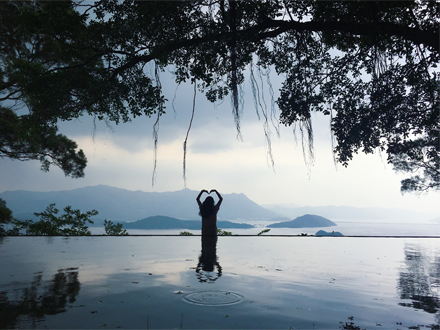
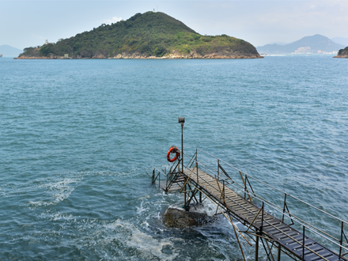
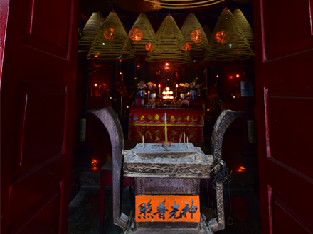

遊香港，有千百萬種玩法！暢遊世界級景點，上山下海；參加熱鬧節慶，瘋玩狂歡；體驗城巿動感，細味道地；享受郊外野趣，輕鬆寫意。無論您喜歡哪一種，在這個匯聚中西古今、精采多姿的「亞洲國際都會」，都一定能看個夠本、玩個痛快！

西環泳棚
泳棚的真正用途，當然是方便游泳人士下水暢游之用，然而西環泳棚之所以成為景點， 除了有一條很有特色的泳棚外，就是該處剛好對正正西方，對面小島青洲上有燈塔， 幾樣配合已經成了一張日落美景，故每逢週末黃昏，泳棚便只見拍友不見泳客了。
Learn More
合一亭
位於香港中文大學新亞書院學生宿舍學思樓與知行樓之間，前臨吐露港，遙對八仙 嶺及深圳東部港區山脊線，晴朗時可遠眺深圳市福田區至華強北一帶摩天大樓及 深圳大鵬半島海岸線。其興建為紀念新亞書院創辦人錢穆先生及其所著的〈天人合一論〉。
Learn More


元朗舊墟大王廟
大王廟是當年元朗舊墟的政治及宗教信仰中心，奉祀洪聖大王。康熙8年鄧文蔚 「由大橋墩遷墟元朗，並建大王古廟。」康熙時實施「遷海」政策，元朗墟遷 到茅洲去，及後復墟，墟民把茅洲的南海洪聖大王請到元朗。民間稱南海神為 廣利洪聖大王，每年農曆2月13日為南海神誕。